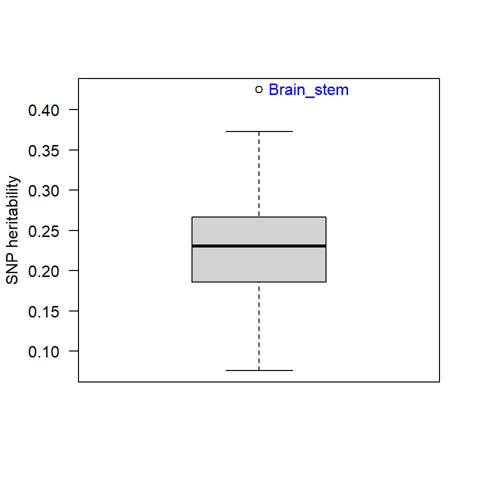
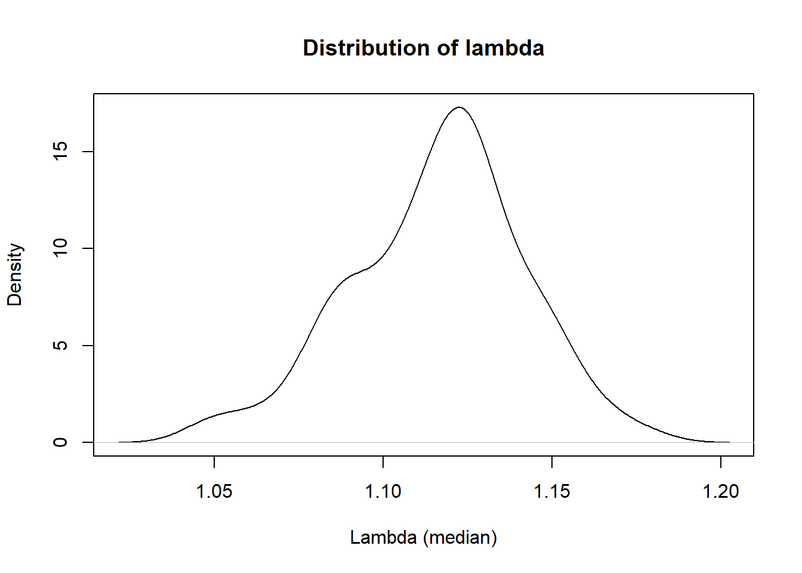
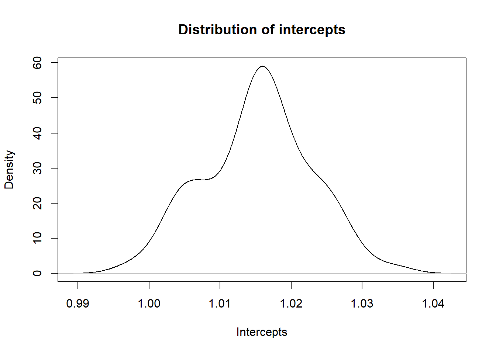
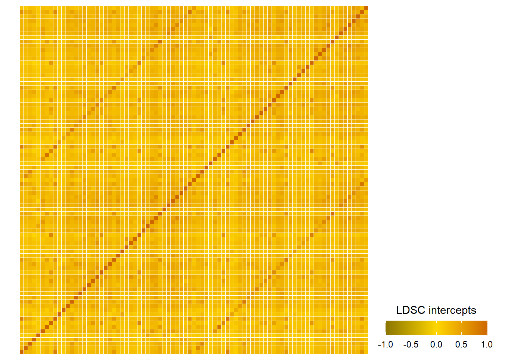
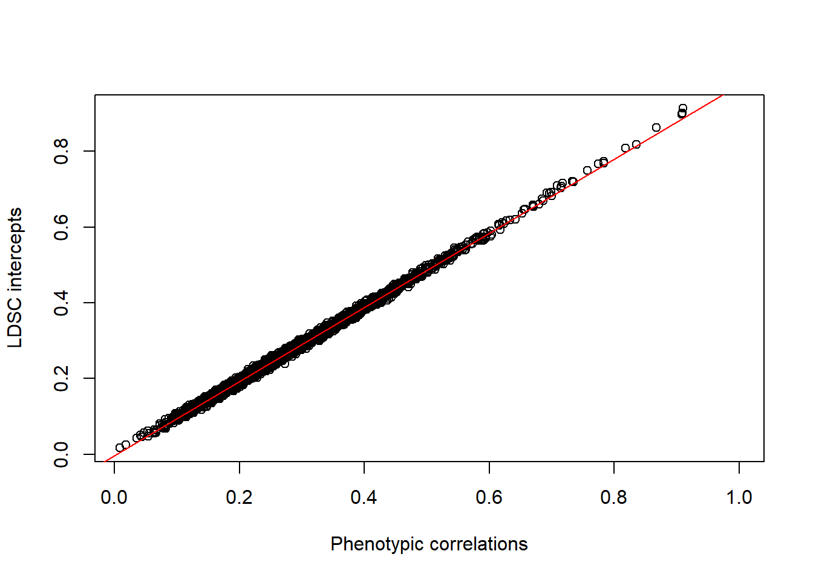

Evaluating gwas
Here, we evaluate the GWAS summary statistics created in a previous step. The following properties of the summary statistics are assessed:
- Heritability
- Genomic Inflation Factor
- Univariate intercepts
- Signal-to-noise ratio
- Do the ldsc intercepts from the whole-brain genetic correlations correlate with phenotypic correlations?
\[\\[0.5in]\]
Heritability
Are all traits heritable?
#!/bin/bash -l
#SBATCH --output=~ldsc/calculate_heritabilities.out
#SBATCH --job-name=heritability_brain_volume
# specify time limit of two hours
#SBATCH --time=0-99:00
# memory per job
#SBATCH --mem=80G
module load devtools/anaconda/2019.3-python2.7.16
~/Software/ldscore_2020_06/ldsc/ldsc.py \
--rg ~gwas_munged/Brain_stem.sumstats.gz,\
~gwas_munged/Left_accumbens_area.sumstats.gz,\
~gwas_munged/Left_amygdala.sumstats.gz,\
~gwas_munged/Left_bankssts.sumstats.gz,\
~gwas_munged/Left_caudal_anterior_cingulate.sumstats.gz,\
~gwas_munged/Left_caudal_middle_frontal.sumstats.gz,\
~gwas_munged/Left_caudate.sumstats.gz,\
~gwas_munged/Left_cuneus.sumstats.gz,\
~gwas_munged/Left_DC.sumstats.gz,\
~gwas_munged/Left_entorhinal.sumstats.gz,\
~gwas_munged/Left_frontal_pole.sumstats.gz,\
~gwas_munged/Left_fusiform.sumstats.gz,\
~gwas_munged/Left_hippocampus.sumstats.gz,\
~gwas_munged/Left_inferior_parietal.sumstats.gz,\
~gwas_munged/Left_inferior_temporal.sumstats.gz,\
~gwas_munged/Left_insula.sumstats.gz,\
~gwas_munged/Left_isthmus_cingulate.sumstats.gz,\
~gwas_munged/Left_lateral_occipital.sumstats.gz,\
~gwas_munged/Left_lateral_orbitofrontal.sumstats.gz,\
~gwas_munged/Left_lingual.sumstats.gz,\
~gwas_munged/Left_medial_orbitofrontal.sumstats.gz,\
~gwas_munged/Left_middle_temporal.sumstats.gz,\
~gwas_munged/Left_pallidum.sumstats.gz,\
~gwas_munged/Left_paracentral.sumstats.gz,\
~gwas_munged/Left_parahippocampal.sumstats.gz,\
~gwas_munged/Left_pars_opercularis.sumstats.gz,\
~gwas_munged/Left_pars_orbitalis.sumstats.gz,\
~gwas_munged/Left_pars_triangularis.sumstats.gz,\
~gwas_munged/Left_pericalcarine.sumstats.gz,\
~gwas_munged/Left_postcentral.sumstats.gz,\
~gwas_munged/Left_posterior_cingulate.sumstats.gz,\
~gwas_munged/Left_precentral.sumstats.gz,\
~gwas_munged/Left_precuneus.sumstats.gz,\
~gwas_munged/Left_putamen.sumstats.gz,\
~gwas_munged/Left_rostral_anterior_cingulate.sumstats.gz,\
~gwas_munged/Left_rostral_middle_frontal.sumstats.gz,\
~gwas_munged/Left_superior_frontal.sumstats.gz,\
~gwas_munged/Left_superior_parietal.sumstats.gz,\
~gwas_munged/Left_superior_temporal.sumstats.gz,\
~gwas_munged/Left_supramarginal.sumstats.gz,\
~gwas_munged/Left_thalamus_proper.sumstats.gz,\
~gwas_munged/Left_transverse_temporal.sumstats.gz,\
~gwas_munged/Right_accumbens_area.sumstats.gz,\
~gwas_munged/Right_amygdala.sumstats.gz,\
~gwas_munged/Right_bankssts.sumstats.gz,\
~gwas_munged/Right_caudal_anterior_cingulate.sumstats.gz,\
~gwas_munged/Right_caudal_middle_frontal.sumstats.gz,\
~gwas_munged/Right_caudate.sumstats.gz,\
~gwas_munged/Right_cuneus.sumstats.gz,\
~gwas_munged/Right_DC.sumstats.gz,\
~gwas_munged/Right_entorhinal.sumstats.gz,\
~gwas_munged/Right_frontal_pole.sumstats.gz,\
~gwas_munged/Right_fusiform.sumstats.gz,\
~gwas_munged/Right_hippocampus.sumstats.gz,\
~gwas_munged/Right_inferior_parietal.sumstats.gz,\
~gwas_munged/Right_inferior_temporal.sumstats.gz,\
~gwas_munged/Right_insula.sumstats.gz,\
~gwas_munged/Right_isthmus_cingulate.sumstats.gz,\
~gwas_munged/Right_lateral_occipital.sumstats.gz,\
~gwas_munged/Right_lateral_orbitofrontal.sumstats.gz,\
~gwas_munged/Right_lingual.sumstats.gz,\
~gwas_munged/Right_medial_orbitofrontal.sumstats.gz,\
~gwas_munged/Right_middle_temporal.sumstats.gz,\
~gwas_munged/Right_pallidum.sumstats.gz,\
~gwas_munged/Right_paracentral.sumstats.gz,\
~gwas_munged/Right_parahippocampal.sumstats.gz,\
~gwas_munged/Right_pars_opercularis.sumstats.gz,\
~gwas_munged/Right_pars_orbitalis.sumstats.gz,\
~gwas_munged/Right_pars_triangularis.sumstats.gz,\
~gwas_munged/Right_pericalcarine.sumstats.gz,\
~gwas_munged/Right_postcentral.sumstats.gz,\
~gwas_munged/Right_posterior_cingulate.sumstats.gz,\
~gwas_munged/Right_precentral.sumstats.gz,\
~gwas_munged/Right_precuneus.sumstats.gz,\
~gwas_munged/Right_putamen.sumstats.gz,\
~gwas_munged/Right_rostral_anterior_cingulate.sumstats.gz,\
~gwas_munged/Right_rostral_middle_frontal.sumstats.gz,\
~gwas_munged/Right_superior_frontal.sumstats.gz,\
~gwas_munged/Right_superior_parietal.sumstats.gz,\
~gwas_munged/Right_superior_temporal.sumstats.gz,\
~gwas_munged/Right_supramarginal.sumstats.gz,\
~gwas_munged/Right_thalamus_proper.sumstats.gz,\
~gwas_munged/Right_transverse_temporal.sumstats.gz \
--ref-ld-chr /mnt/lustre/groups/ukbiobank/Edinburgh_Data/Software/ldscore_2020_06/eur_w_ld_chr/ \
--w-ld-chr /mnt/lustre/groups/ukbiobank/Edinburgh_Data/Software/ldscore_2020_06/eur_w_ld_chr/ \
--out ~ldsc/heritability_volumes_ldsc.out
### Aim: run LDSC to get heritabilities with Bulik-Sullivan packages
### extract files in cd ~gwas_munged/ and save in a file
### using ls -d "$PWD"/*.gz > listOfFiles.list
### Author: Anna Furtjes
### Date: 13/05/2021
### submit using: sbatch -p brc,shared ~/scripts/genetic_networks_project/ldsc/ldsc_bullik_heritability_volumes_13052021.sh
## copy onto local machineworkingd<-getwd()
temporarywd<-paste0(workingd,"/data_my_own/ldsc/")
setwd(temporarywd)
heritability<-read.table("heritability_brain_volumes_14052021.txt",header=T)
summary(heritability$h2_obs)## Min. 1st Qu. Median Mean 3rd Qu. Max.
## 0.0757 0.1858 0.2306 0.2345 0.2669 0.4248library(plyr)
source("https://raw.githubusercontent.com/talgalili/R-code-snippets/master/boxplot.with.outlier.label.r")
boxplot_h2<-boxplot.with.outlier.label(heritability$h2_obs,heritability$p2,xaxt="n",yaxt="n",ylab="SNP heritability",spread_text = F)
axis(side=2,las=2)
Display heritability estimates
table<-heritability[,c("p2","h2_obs","h2_obs_se")]
names(table)<-c("Brain areas","h2 observed","SE")
table<-table[order(table$`h2 observed`),]
library(DT)
datatable(table, rownames=FALSE,options = list(pageLength=5, scrollX=T))Note. The frontal pole is only a tiny area which often is difficult to segment. This might have caused low levels of systematic variation across the GWAS resulting in very low SNP heritability captured by LDSC.
\[\\[1in]\]
Genomic Inflation Factor for each GWAS
Find an explanation for how to interpret the Genomic Inflation Factor online. It is an index of confounding but it is also sensitive to true polygenic signal. It can increase with sample size, heritability and the number of causal variants (REF).
### Calculate Genomic Inflation Factor for each of the GWAS
# Save in a list
# We will later contrast them with the univariate LDSC intercept
# load dependencies
library(data.table)
library(stringr)
# set wd to where the gwas files are stored
setwd("~/PhD/output/regenie/step2/")
# list all files of interest
files_of_interest <- list.files(pattern="GWAS_22chr_noTBVcontrol_")
# create data.frame to hold Genomic Inflation Factor
table <- as.data.frame(matrix(ncol = 3,nrow = length(files_of_interest)))
names(table)<-c("trait","lambda","mean_chisq")
for(i in 1:length(files_of_interest)){
# read in GWAS file
file<-fread(files_of_interest[i], header=T,data.table=F)
# save trait_name in table
trait_name <- str_remove(files_of_interest[i], pattern = "GWAS_22chr_noTBVcontrol_")
trait_name <- str_remove(trait_name, pattern = ".txt")
table$trait[i]<-trait_name
### Assess systematic bias in GWAS using Genomic Inflation Factor
chisq <- qchisq(1-file$P,1)
lambda_median <- median(chisq)/qchisq(0.5,1)
table$lambda[i]<-lambda_median
## calculate average association signal in all SNPs
table$mean_chisq[i] <- mean(file$CHISQ, na.rm=T)
}
write.table(table,"~/ldsc/lambda_per_volume_14052021.txt", quote=F, row.names=F, sep="\t")temporarywd<-paste0(workingd,"/data_my_own/ldsc/")
setwd(temporarywd)
lambda<-read.table("lambda_per_volume_14052021.txt",header=T)
# get table that holds univariate LDSC intercepts
univar_intercepts<-heritability[,c("p2","h2_int","h2_int_se")]
names(univar_intercepts)<-c("trait","intercept","intercept_se")
stats<-merge(lambda, univar_intercepts, by = "trait")
# plot lambda
x<-density(stats$lambda)
plot(x, main = "Distribution of lambda", xlab = "Lambda (median)")
stats$round_lamba<-round(stats$lambda, digits = 3)
library(DT)
datatable(stats[,c("trait","round_lamba")], rownames=FALSE, colnames = c("Traits","Genomic Inflation Factor"),options = list(pageLength=5, scrollX=T))\[\\[1in]\]
Univariate intercepts
The univariate LDSC intercept is an index of stratification confounding. It gives the expected chi-squared value for SNPs with no effect, as, under the null hypothesis, the expected mean of the chi-squared statistic is itself (i.e. 1.0).
Univariate LDSC intercepts close to 1 indicate that the GWAS calculation appropriately controlled for population stratification. When the LDSC intercept is much larger than 1.0, stratification is indicated because the expected value for SNPs with no effect under the null hypothesis is still association signal.
# plot intercepts
x<-density(stats$intercept)
plot(x, main = "Distribution of intercepts", xlab = "Intercepts")
# also we are interested to know whether the confidence intervals around the intercept all overlap with 1
stats$uci<-round(stats$intercept+(1.96*stats$intercept_se), digits = 2)
stats$lci<-round(stats$intercept-(1.96*stats$intercept_se), digits = 3)
stats$CI95 <- paste(stats$lci," - ", stats$uci)
stats$round_intercept<-round(stats$intercept, digits = 3)
datatable(stats[,c("trait","round_intercept","CI95")], rownames=FALSE, colnames = c("Traits","Intercept","95% Confidence Interval"),options = list(pageLength=5, scrollX=T))\[\\[1in]\]
Signal-to-noise ratio
To get an index for the ratio of true signal to spurious signal, we can divide the mean chi-squared value within a set of summary statistics by the univariate intercept-1.
This mean chi-squared value is an index of the average association signal across all SNPs. However, it includes the chi-squared values expected under the null hypothesis, which is 1.0 (see above under Univariate intercepts). In order to get the mean signal beyond the null hypothesis, we subtract 1.0 from the mean chi-squared values across all SNPs. Finally, the ratio between mean chi-squared - 1 and intercept - 1 is the ratio of true signal to confounding. A comprehensive and intuitive explanation of the interpretation of this ratio can be found here(Section 4 in Supplementary materials). Note to self: Keep in mind, that there is no point considering confidence intervals in this case because the ldsc heritability is a signal-to-noise ratio and already has a standard error.
#calculate the ratio of the mean chisq-1 to the univariate intercept-1 to get a sense of the ratio of true signal to spurious signal
#Mean chisq -1 / Intercept-1
# first we round one intercept to the second digit because we have one trait where the intercept is slightly below 1 and results in a negative ratio
# note that this value will result in an infite value instead
trait_intercept_below1<-stats[which(stats$intercept<1),"trait"]
intercept_below1<-stats[which(stats$intercept<1),"intercept"]
stats$intercept[which(stats$intercept<1)]<-round(stats$intercept[which(stats$intercept<1)],digits = 2)
stats$ratio<-(stats$mean_chisq - 1)/(stats$intercept-1)
# display as table
stats$ratio<-round(stats$ratio, digits = 3)
stats$mean_chisq<-round(stats$mean_chisq, digits = 3)
# the signal to noise ratio for one trait is Inf, but is displayed as an empty cell
stats[which(stats$ratio>10000),"ratio"]<-"Inf"
datatable(stats[,c("trait","ratio","mean_chisq","intercept")], rownames=FALSE, colnames = c("Traits","Signal to noise ratio", "Mean chisq","Univariate intercept"),options = list(pageLength=5, scrollX=T))Note that one trait (Left_caudal_anterior_cingulate) has a univariate intercept below, but very close to 1 (intercept = 0.9971).
\[\\[1in]\]
Plot LDSC intercepts for genetic correlations across the brain
### plot intercepts of genetic correlation matrices
rm(list=ls())
## this script is displaying the heatmaps of the networks
# load dependencies
library(stringr)
library(reshape2)
library(ggplot2)
# load data and name it according to network
workingd<-getwd()
temporarywd<-paste0(workingd,"/data_my_own/ldsc/")
setwd(temporarywd)
networks<-list.files(pattern=".RData")
network_names<-str_replace(networks,pattern=".RData",replacement = "")
for(i in 1:length(networks)){
load(networks[i])
name<-network_names[i]
assign(name,LDSCoutput)
}
## name all columns in $I after brain regions and round $I
for(i in network_names){
output<-get(i)
dimnames(output$I)[[1]]<-dimnames(output$S)[[2]]
dimnames(output$I)[[2]]<-dimnames(output$S)[[2]]
name<-i
assign(name,output)
output$I<-round(output$I,digits = 2)
name_cor<-paste0("intercepts_",i)
assign(name_cor,output$I)
}
# count number of correlation matrices
#length(ls(pattern="intercepts_"))
# create vector containing names of the correlation matrices
matrices<-ls(pattern="intercepts_")
## plot the rounded correlation matrices
# get lower triangle of matrix
for(i in matrices){
cormatrix<- get(i)
get_lower_tri<-function(cormatrix){
cormatrix[upper.tri(cormatrix)] <- NA
return(cormatrix)
}
lower_triangle<-get_lower_tri(cormatrix)
lower_triangle<-reshape2::melt(lower_triangle)
lower_triangle$corrected<-with(lower_triangle, ifelse(value>=1.00,1.00,value))
#print(i)
#print(lower_triangle)
heatmap<-
ggplot(data=lower_triangle, aes(Var1,Var2,fill=corrected))+
geom_tile(color = "white")+
theme_minimal()+
theme_bw()+
theme(axis.text.x = element_text(angle = 45, vjust = 1,
size = 8, hjust = 1))+
theme(axis.text.x = element_text(angle = 45, vjust = 1,
size = 8, hjust = 1))+
theme(axis.title.x=element_blank(),
axis.title.y = element_blank(),
panel.grid.major = element_blank(),
panel.border = element_blank(),
axis.ticks = element_blank(),
legend.justification = c(1,0),
#legend.position = c(0.45,0.7),
legend.direction = "horizontal")+
scale_fill_gradient2(low="gold4",high="darkorange3",mid ="gold",
midpoint=0,limit=c(-1,1),na.value="white",
name="LDSC intercepts")+
guides(fill=guide_colorbar(barwidth = 7,barheight = 1,title.position = "top",title.hjust = 0.5))+
coord_fixed()
heatmap<-heatmap+
geom_text(aes(Var1,Var2,label=value),color="black",size=2)
name<-paste0(i,"_heatmap")
assign(name,heatmap)
}Central Executive
Cingulo-opercular
Default Mode
LDSC intercepts across the whole brain

Do the LDSC intercepts correlate with the phenotypic correlations between brain areas?
The intercept depends on the phenotypic correlation between traits which can be negative or positive. Thus, we plot the intercepts as a function of the pairwise phenotypic correlation between traits. Based on LDSC theory, it should look like a straight line + small variation due to sampling error REF.
# load intercepts
workingd<-getwd()
temporarywd<-paste0(workingd,"/data_my_own/ldsc/")
setwd(temporarywd)
load("whole_brain.RData")
ldscoutput<-LDSCoutput_wholebrain
# name rows and columns
dimnames(ldscoutput$I)[[1]]<-dimnames(ldscoutput$S)[[2]]
dimnames(ldscoutput$I)[[2]]<-dimnames(ldscoutput$S)[[2]]
# keep lower matrix
cormatrix<-ldscoutput$I
get_lower_tri<-function(cormatrix){
cormatrix[upper.tri(cormatrix)] <- NA
return(cormatrix)
}
intercepts<-get_lower_tri(cormatrix)
diag(intercepts)<-NA
intercepts<-reshape2::melt(intercepts)
names(intercepts)<-c("region1","region2","intercepts")
# load phenotypic correlations
temporarywd_pheno<-paste0(workingd,"/data_my_own/Pheno_preparation/")
setwd(temporarywd_pheno)
load("pheno_decomposition.RData")
phenotypic_cor<-cor_matrix
# sort same as intercept matrix
names<-dimnames(ldscoutput$S)[[2]]
phenotypic_cor<-phenotypic_cor[names,names]
# get lower triangle
phenotypic_cor<-get_lower_tri(phenotypic_cor)
phenotypic_cor<-reshape2::melt(phenotypic_cor)
names(phenotypic_cor)<-c("region1","region2","phenotypic_cor")
intercept_pheno<-merge(intercepts,phenotypic_cor,by=c("region1","region2"))
plot(intercept_pheno$phenotypic_cor,intercept_pheno$intercepts,xlab="Phenotypic correlations",ylab="LDSC intercepts")
abline(lm(intercept_pheno$intercepts~intercept_pheno$phenotypic_cor,na.action = "na.omit"),col="red")
summary(lm(intercept_pheno$intercepts~intercept_pheno$phenotypic_cor))##
## Call:
## lm(formula = intercept_pheno$intercepts ~ intercept_pheno$phenotypic_cor)
##
## Residuals:
## Min 1Q Median 3Q Max
## -0.0247109 -0.0041577 -0.0001201 0.0039923 0.0251699
##
## Coefficients:
## Estimate Std. Error t value Pr(>|t|)
## (Intercept) -0.0037274 0.0002879 -12.95 <2e-16 ***
## intercept_pheno$phenotypic_cor 0.9798414 0.0009259 1058.22 <2e-16 ***
## ---
## Signif. codes: 0 '***' 0.001 '**' 0.01 '*' 0.05 '.' 0.1 ' ' 1
##
## Residual standard error: 0.00611 on 3401 degrees of freedom
## (3486 observations deleted due to missingness)
## Multiple R-squared: 0.997, Adjusted R-squared: 0.997
## F-statistic: 1.12e+06 on 1 and 3401 DF, p-value: < 2.2e-16# how many intercepts are there? Should be 3403
#sum(!is.na(intercepts$intercepts))
By Anna Elisabeth Fürtjes
anna.furtjes@kcl.ac.uk